YK Apps


#00FF9C
#B6FFA1
#FEFFA7
#FFE700
#12251D
The rounded Apps lettering follows the supplied reference. The YK mark retains the separate stems and thin diagonal. SVG masters contain outlined artwork with no font dependency.

The rounded Apps lettering follows the supplied reference. The YK mark retains the separate stems and thin diagonal. SVG masters contain outlined artwork with no font dependency.